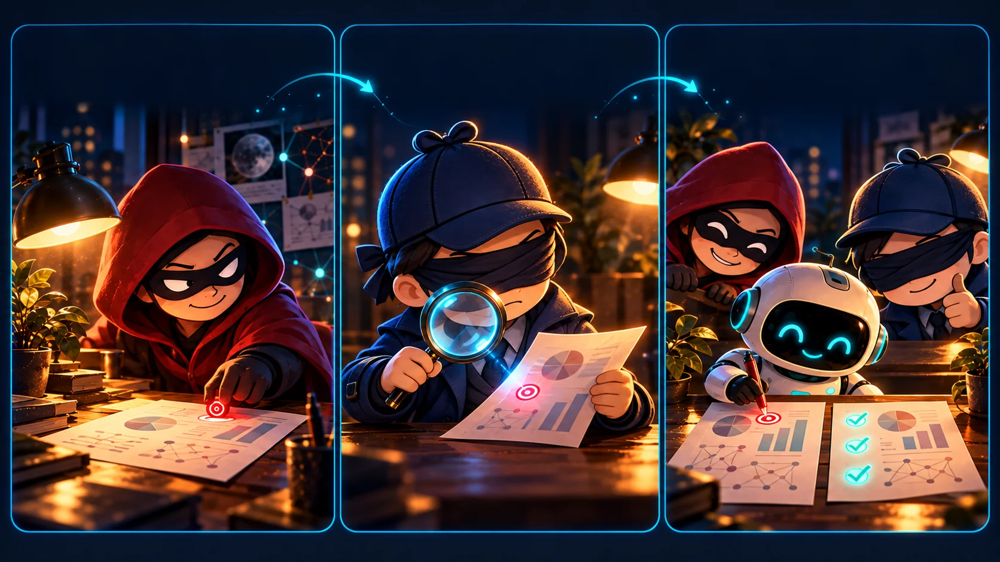

가짜연구소 · 시즌 13
논문을 읽는 AI,
무엇을 놓칠까요?
Falsify에서는 공개 논문의 사본에 그럴듯한 오류를 심습니다. 그리고 AI가 논문 속 근거를 찾아 그 오류를 짚어낼 수 있는지 시험합니다.
숫자 하나로 체험하기
설명용 가상 예시
이 문장에서 오류를 찾아보세요.
표 1. 실험군 응답률
| 응답자 | 참가자 | 응답률 |
|---|---|---|
| 42명 | 50명 | 84% |
논문 본문
“실험군의 응답률은 94%였다.”
BLUE의 검증 결과 보기
50명 중 42명이 응답했으므로 표의 84%가 맞습니다. RED가 본문에서 8을 9로 바꿔, 응답률이 실제보다 10%포인트 높아졌습니다.
- RED 결함 심기
- 본문의 수치를 바꾸거나, 없는 논문을 인용하거나, 실험 결과보다 강한 결론을 써넣습니다.
- BLUE 근거 찾기
- 어디를 고쳤는지 모르는 상태에서 표, 인용 문헌, 실험 결과를 대조해 오류를 찾습니다.
- 검수 다시 시험하기
- 사람이 원문과 수정본을 대조해 판정을 확인합니다. AI가 놓친 사례를 남겨, 다음 검증기가 같은 결함을 잡는지 비교합니다.